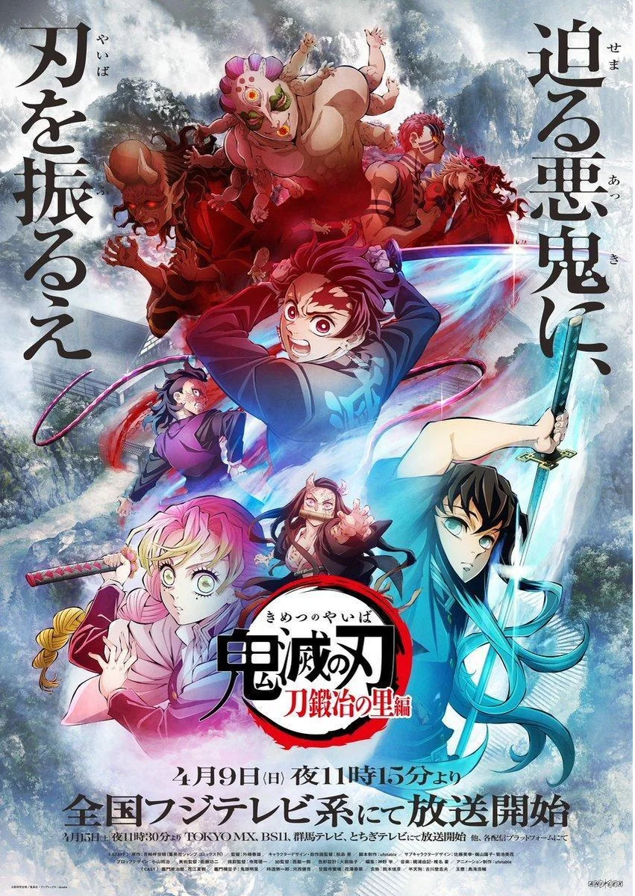
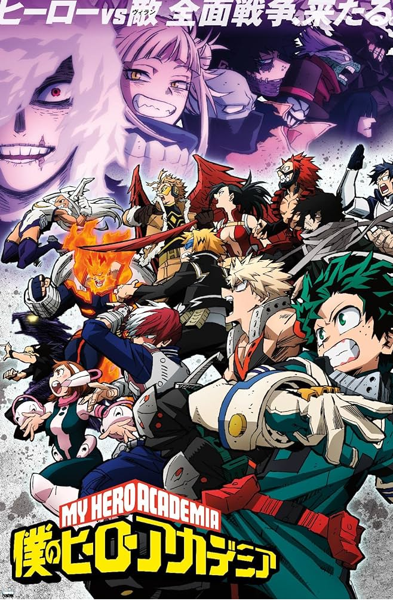

Personal Information
Name: Victor Angelo M. Ganancial
Nickname: Victor
Age: 20 years old
Birthdate: August 24, 2003
Hobbies / Interests: Playing video games | Watching Netflix and Anime
School Information
Senior High School Graduated From: Pasay City South High School in Pasay City.
Course: Bachelor of Science in Information Technology with a specialization in Mobile and Internet Technologies.
Scholarship: None, but I used financial aid, which gave me a 50% discount on my tuition fee if my recent school is a public school
Transferee / Second Course? This is my first course.
Did you choose this course? Yes
Why Yes? I chose this course because, since I was little, my parents saw my potential in the technology industry, and I also have an interest in this field.
I.T. Experience: I don't have any programming experience yet, but I did learn some of the basics in my first year of college. I liked playing video games such as Valorant and mobile games like Mobile Legends.
Subject Related Questions
What do you expect to learn from this course (Web Programming)? My expectations in the course of web programming are that I will learn and gain interest in building a website.
What do you want to learn to help you in your chosen Major? I want to learn the basics and enhance my abilities in programming.
Life Questions
Goals in life: My goals in life are to be successful in my career, be financially stable, and achieve a healthy lifestyle.
Do you have a dream that you wish to fulfill? Yes, my dream is to raise a family in the future and provide support for my children and my parents.
Any other interesting aspects of your life that you would like to share:
I'm the type of person who really doesn't talk a lot if the people with whom I talk are not very familiar to me, but when I'm with someone who is really close to me, I become really talkative. I'm not a sporty type of person. I don't really play well when it comes to physical activities. When it comes to video games, I cannot say that I am excellent at playing the games that I play. I'm like an average player with knowledge of the game. I don't have a talent for singing or dancing.
Photos To Know Me Better
Favorite Anime:
Kimetsu No Yaiba (Demon Slayer)
Boku no Hiro Akademia (My Hero Academia)
Favorite Online Games:
Valorant
Mobile Legends: Bang Bang